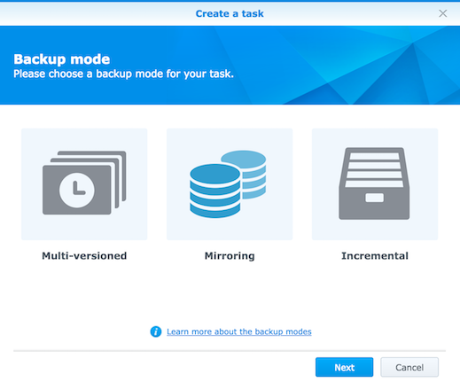

Synology have release a new package to allow you to backup your server to a synology. The server supports Windows and Linux servers, and Macs with a little setup.
Overview
- Install Homebew and then the latest version of rsync.
- Setup the rsync daemon on your Mac
- Setup Synology ‘Active Backups for Servers’ on your Synology.
- Setup the Mac to start the Rsync Daemon at startup.
Install Hombrew and the latest version of rsync
First off, install Homebrew if you don’t have it installed on your Mac already.
Next install the latest version of rsync with the following command
brew install rsync
Quit terminal and the open in again to reload your paths, then check your version of rsync
rsync --version
You should now have version 3.x.x installed.
Setup the Rsync Daemon
First, lets setup your /etc/rsyncd.conf file.
sudo nano /usr/local/etc/rsyncd.conf
With the contents as below, although you will need to modify some parts to suit your setup. (More details on options below rsyncd.conf)
max connections = 1
log file = /var/log/rsync.log
timeout = 300
[home]
comment = Home Folder
path = /Users/your-home-folder
read only = yes
list = yes
auth users = synology
secrets file = /etc/rsyncd.secrets
hosts allow = 127.0.0.1 10.x.x.x
You will need to update the home folder above, or change it to what ever folder you would like to backup. You will also need to modify the ‘hosts allow’ line to include the IP address of the Synology NAS (You can remove this line if you do not want the security of limiting which host can connect via rysnc to your Mac.)
Next, setup the ‘Secrets’ file for rsync to store the rsync authentication details.
sudo nano /usr/local/etc/rsyncd.secrets
The contents of this file should be as follows:
synology:password123
The first half of the line above, before the ‘:’ is the username, and the second half is the password. Update the password to one you want to use…
Update the permissions on the ‘Secrets’ file above to limit access to it.
sudo chmod 600 /usr/local/etc/rsyncd.secrets
That’s it for configuring the Rsync Daemon.
Start the server so we can setup the ‘Active Backup for Servers’ package on the Synology. Later we’ll go through automating this so it starts when you turn on your Mac.
Setup the Synology
Install ‘Active Backup for Servers’ (ABS) from the Synology ‘Package Center’
Open ABS and navigate to the ‘Linux Backup’ section, then click ‘Create +’ from the top menu.
Next, select the backup mode you would like to use, I choose ‘Mirroring’ as I have setup snapshots to keep backup history. (I did this using ‘Snapshot Replicator’ package from Synology).

Click Next, then fill out the details on the next page as shown below (Change the server address to your Macs IP address). Make sure to change the ‘Connection Mode’ to ‘rsync module mode’.

From this point, click next and then select the folder you want to backup, and the backup destination, etc…
Start the Rysnc Daemon Automatically on Boot
To come…
References:
https://kromtech.com/blog/security-center/securing-rsync
https://www.shadowandy.net/2018/01/synology-active-backup-server.htm/2